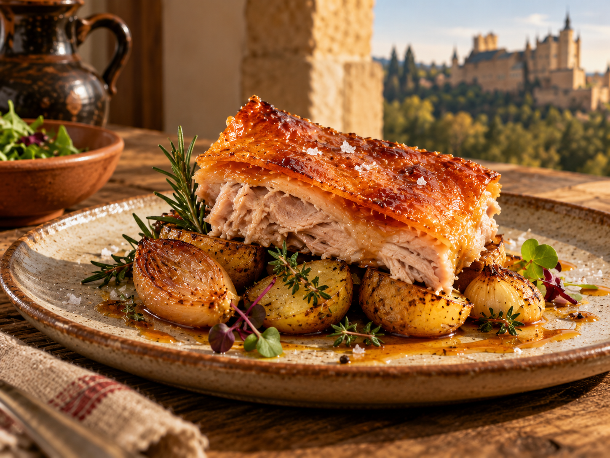
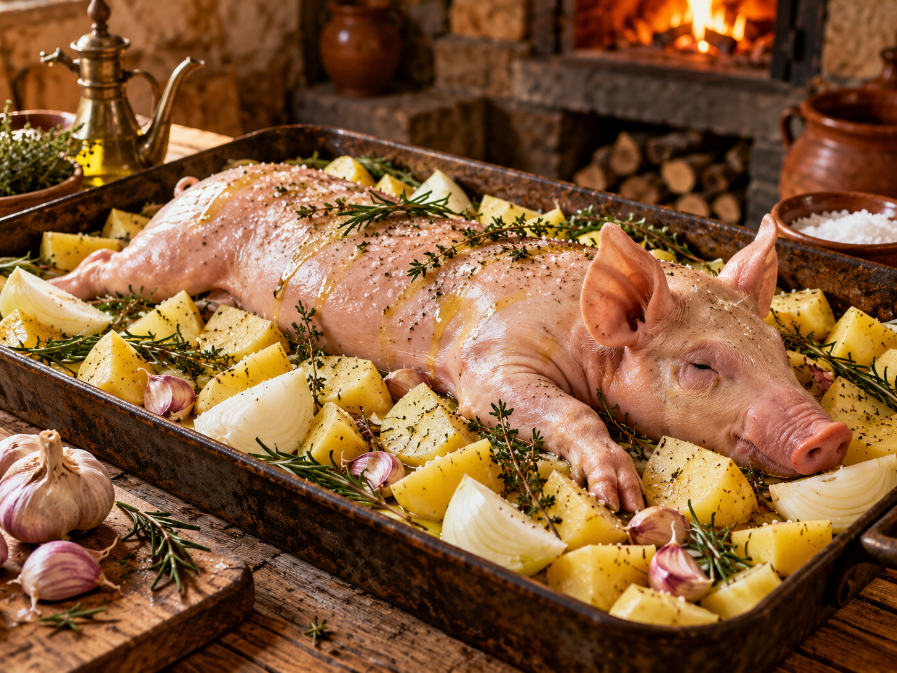
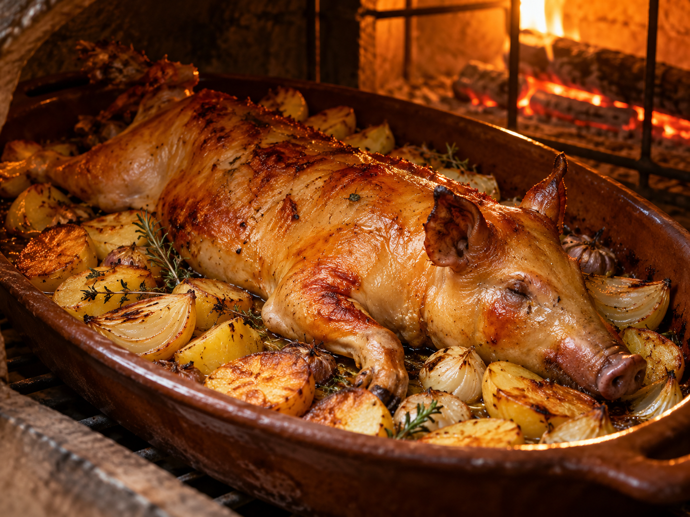
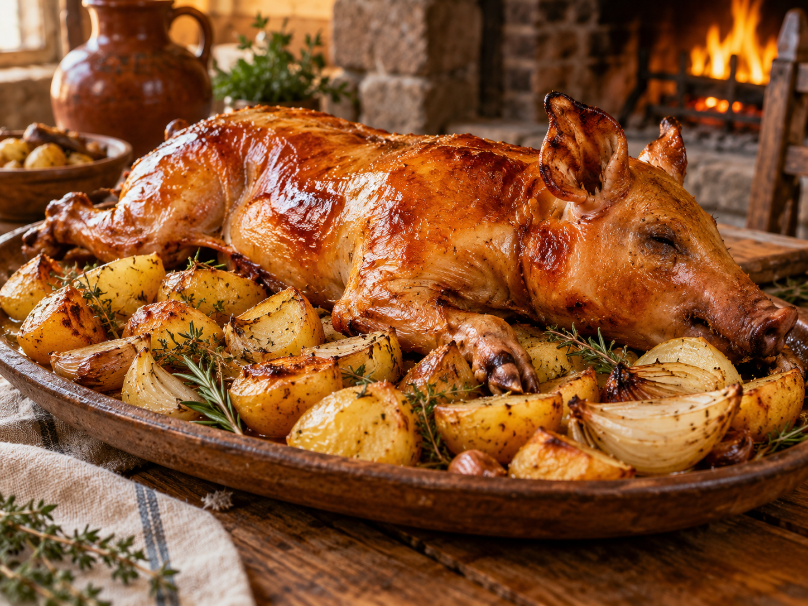

RECETA CON GUARNICIÓN
Cochinillo con patatas
Una versión del cochinillo asado acompañada de patatas, cebolla y hierbas aromáticas para conseguir una receta completa y llena de sabor.

En esta receta, el cochinillo comparte protagonismo con una guarnición de patatas asadas que recoge parte de los jugos de la cocción.
La combinación de carne, patatas y cebolla permite preparar un plato completo en una sola fuente. Las patatas se cocinan lentamente mientras absorben los aromas del asado y las hierbas.
Para conseguir un buen resultado, es importante cortar las patatas con un grosor similar y distribuirlas de manera uniforme para que se cocinen al mismo tiempo.
ANTES DE EMPEZAR
Ingredientes
- 1 cochinillo limpio
- 4 patatas medianas
- 2 cebollas
- 3 dientes de ajo
- Aceite de oliva
- Sal
- Romero o tomillo
- Agua o caldo suave

PASO A PASO
Preparación
-
Preparar las patatas
Pelamos las patatas y las cortamos en trozos medianos. Cortamos también la cebolla y colocamos ambos ingredientes en el fondo de una fuente apta para horno.
-
Añadir los aromas
Incorporamos los ajos, un poco de aceite de oliva, sal y las hierbas aromáticas. Añadimos una pequeña cantidad de agua o caldo para facilitar la cocción.
-
Colocar el cochinillo
Colocamos el cochinillo sobre la guarnición, procurando que la piel quede bien expuesta y no permanezca en contacto directo con el líquido.
-
Hornear lentamente
Cocinamos el conjunto a temperatura moderada para que la carne quede tierna y las patatas se vayan cocinando con los jugos del asado.
-
Dorar al final
Durante los últimos minutos aumentamos ligeramente la temperatura del horno para conseguir una piel dorada y crujiente.


EL TOQUE FINAL
Una guarnición llena de sabor
Las patatas deben quedar tiernas por dentro y ligeramente doradas en el exterior. Durante la cocción absorben parte del jugo del cochinillo y de las hierbas aromáticas.
Antes de servir, se puede dejar reposar el plato durante unos minutos para que los sabores se asienten y sea más fácil cortar el cochinillo.
Cochinillo con guarnición al horno
Vídeo sobre la preparación de cochinillo acompañado de patatas al horno.
¿Quieres descubrir otra receta?
Consulta nuestra selección y descubre otra forma de preparar el cochinillo.
Volver a recetas